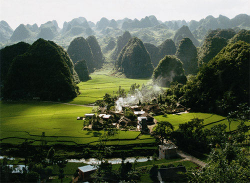
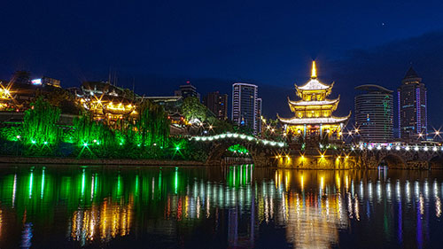
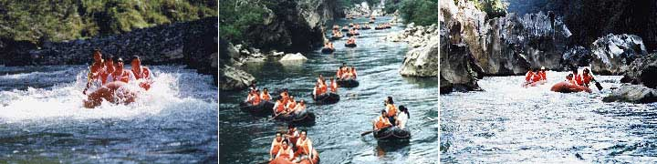
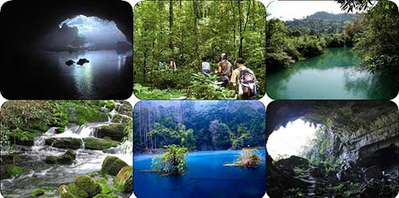
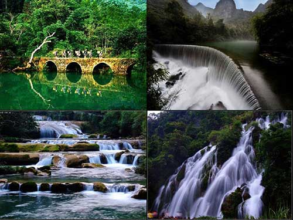
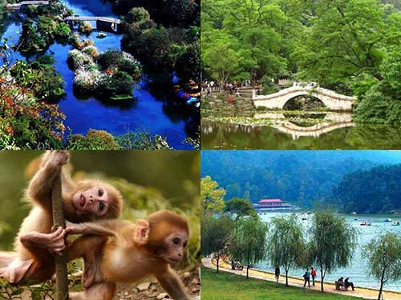

荔波茂兰地处云贵高原南缘，属中亚热带季风湿润气候，区内峰峦叠嶂，溪流纵横，原生森林茂密，喀斯特地貌形成的山、水、林、洞、瀑、石融为一体，呈现出喀斯特森林生态环境的完美统一和神奇的特色。
这里是世界自然遗产地，拥有中国最美的十大森林之一的茂兰喀斯特原始森林；有“超级水上盆景”之称的小七孔；峻险神奇、气势雄伟磅礴的大七孔；两岸峭峰挺秀，纤巧玲珑，浪漫、刺激的水春河漂流；风景如画的樟江风光带等。典型的喀斯特自然景观和独特的少数民族人文景观融为一体。被称为“地球腰带上的绿宝石”。
行程特色
【线路】独家定制户外旅行线路，不走常规线，更深层的自然体验
【风景】深入茂兰这个原生态地方，美丽的森林，溪谷，瀑布，天坑溶洞
【美食】纯正当地美味特色餐，完全不同于普通团餐
【线路】独家定制户外旅行线路，不走常规线，更深层的自然体验。
第一天：深圳—贵阳
宿：贵阳酒店或同级（四星标准）
10：50 于深圳指定地点集合
11:00—12：00 前往宝安机场,午餐在机场自理
13:05-14:50 中国国航CA4368 前往贵阳龙洞堡机场
14：50—16：00 取行李乘车前往入住酒店稍作休息（车程约25分钟左右）
16：15—18：30 于酒店集合前往青岩古镇。青岩古镇在贵阳市花溪南12公里处。它是贵州四大古镇之一。古镇四周筑有城墙，用方块巨石垒砌，城墙上筑有敌楼、垛口、炮台。城楼与石板古道、古牌坊交相辉映。电影寻枪就曾于此地拍摄。青岩让人印象最深的可能就是当地的美食了。豆腐果、泡豆腐、豆腐皮、状元蹄、鸡辣角等
小吃推荐：青岩的吴家臭豆腐一定要吃，很酥很香，豆腐丸子也不错，还有一个稀饭（甜品来的）很好吃

18：30—20：00 前往贵阳的美食街吃本地特色菜。品民族菜肴，首选凯里苗家酸汤鱼、布依族的花江狗肉火锅，市内遍街都是。如又要品民族菜，还想看民族歌舞表演，可到大部落、老凯里、侗家食府等酒家（按可续需求安排）
20：00—21：00 可散步步行到了著名的甲秀楼观赏夜景，感受中国10大名楼的迷人风采
提示：贵阳夜市很多，其中以合群路夜市最为有名。喜欢喝茶的则可以去达德学校，甲秀楼的翠微苑

第二天：贵阳—荔波—水春河漂流
宿：荔波县（三星标准）
07：30—08：00 早餐
08：00—11：30 从贵阳出发乘坐空调旅游车经贵新高速公路（约3小时）到达贵州第一个世界自然遗产地——荔波。沿途欣赏世上绝无仅有的“绿色咯斯特地貌”
11：30—12：30 于荔波水春河附近农家乐中饭
12：30—16：45 前往水春河漂流. 水春河是樟江风光最秀丽的一段，因靠近布依族古寨水春寨而得名。它长达十三公里，奇峰绝壁夹江锁岸，构成了“十三道浪，七重滩”的奇险景观。漂流同时欣赏两岸布依村寨及田园风光（漂流全程约6公里，历时3.5小时）

16：45—17：30 后返回荔波县城入住酒店（三星级）
17：30—18：30 荔波本地特色晚餐
18：30—21：00 自由活动，县广场附近有一条小吃街。大家可以去感受下本地特色的夜市生活。
荔波特色小吃：荔波野生杨梅汤、野生樟江烤鱼、荔波老彭豆花面（蘸水面、干拌面、骨汤面，豆花管饱）、荔波米片、荔波凉粉、荔波野生青梅酒、荔波干笋、荔波血肠
第三天：荔波—茂兰
宿：五眼桥农家乐
8：00—8：30 早餐
8：30—9：20 集合坐车经前往茂兰乘车前往游览茂兰喀斯特原始森林---中国十大最美森林，茂兰喀斯特森林保护区以探索喀斯特原始森林的神奇与奥秘；结识珍稀濒危的野生动物植物；体验密林深处的古村落遗迹遗址；感受人与自然和谐相处的民族风情。（车程约1小时）
09：20—09：45 到达尧古参观尧古布衣村寨。尧古布衣村寨占地不大，曲径通幽，古朴雅致。村内的造纸、酿酒、织布作坊原汁原味的再现了布依族的传统生活习俗。其中，尧古造纸传承千年，至今仍为当地村民副业收入来源
09：45—12：30 观石上森林峰丛景观（1.5小时）典型的喀斯特地貌，裸露的石山上覆盖着茂密的森林，是地球同一纬度上惟一的绿洲。开车40分钟前往水中林-拉滩瀑布-空穴谷-黄杨沟-荛所古桥。这里不仅能欣赏到瀑布美景，还可下水体会瀑布浴的原始野趣，和到螃蟹沟抓螃蟹、水中林嬉戏打水的儿时乐趣
12：30—13：30 返回到尧所古桥往五眼桥景区农家乐
13：30—18：00 集合前往茂兰原始森林。先沿水路——五眼桥-青龙涧-青龙瀑—青龙潭-青龙桥（40分钟）
再行五眼桥—洞筛水必—黑洞—神仙洞—九洞天，环线游览（游览时间2.5-3.5小时）
茂兰自然保护区总面积30多万亩，森林覆盖率达91.6%。茂兰自然保护区内有众多的喀斯特地貌形态与浓郁的喀斯特森林配合，形成一幅种类丰富、群落类型多样的喀斯特原始森林景观，是目前世界同纬度地区罕见的亚热带喀斯特原始森林残存区。在这个喀斯特生命奇迹的昌盛森林王国，藤萝树木在这里肆意的舞蹈，生命精灵在这里自由的歌唱

18：30—19：30 返回五眼桥农家乐吃晚饭
19：30—21：00 晚上住在五眼桥茂兰森林保护区农家乐
第四天：茂兰—小七孔—荔波
宿：荔波（三星标准）
08：30—09：00 早餐
09：00—10：45 五眼桥周边自由活动，感受近距离接近大自然森林的呼吸
10：45—11：30 乘车往小七孔景区
11：30—12：30 小七孔景区附近农家家午餐
12：30—17：00 游览小七孔景区(含观光车，景区游览时间约为3.5-4小时)。进入景区，首先映入眼帘的是绿树环抱的“卧龙潭”；接着来到水道错综复杂、浪漫的鸳鸯湖；感受着陆上森林的奇妙，再让你体验一下水微微漫过小路浸湿脚背的“水上森林”的美妙（游水上森林游客需自备拖鞋）让你体验“湿足”的无限乐趣。接着投入眼球的是长3千多米的瀑布群“六十八级叠水瀑布”，“响水河”；在河的下游，荔波最大的瀑布“拉雅瀑布”更让您感受到大自然的神奇；最后，将来到始建于清代道光十五年(公元1835年)的“小七孔石桥”、通往广西的铜鼓桥。这里富含负氧离子，是旅游界公认的一个“洗眼、洗心、洗肺”的好地方，卧龙河生态长廊，更有小九寨的美称

17：00—18：00 返回荔波县城
18：00—19：00 于荔波吃特色菜
晚上可在荔波县城小吃一条街自费品尝各种烧烤：荔波樟江河鱼烧烤、冰镇杨梅汤等
第五天：荔波—贵阳—深圳
08：30—09：00 早餐。
09：00—12：00 酒店集合乘车返回贵阳（约3小时）
12：30—13：30 前往花溪公园不远处的一条步行街内吃有最地道的贵阳小吃。牛肉粉、小保冰浆、烤豆腐、洋芋巴
13：30—18：30 下午自由活动
推荐几点：1、花溪公园也很不错，租一辆自行车，在公园里面边玩边逛很是悠闲。2、黔灵公园(风景不错，还可以看到野生猕猴也可选择去当地步行街自由购买本地特产
晚餐自由选择（费用自理），推荐省府路的老凯里酸汤鱼吃贵阳特色火锅

18：30 集合前往机场
20：30—22：05 乘坐（深航）中国国航返回深圳温馨的家
行程提供方：行者无涯深度旅行
页面整理：小铁